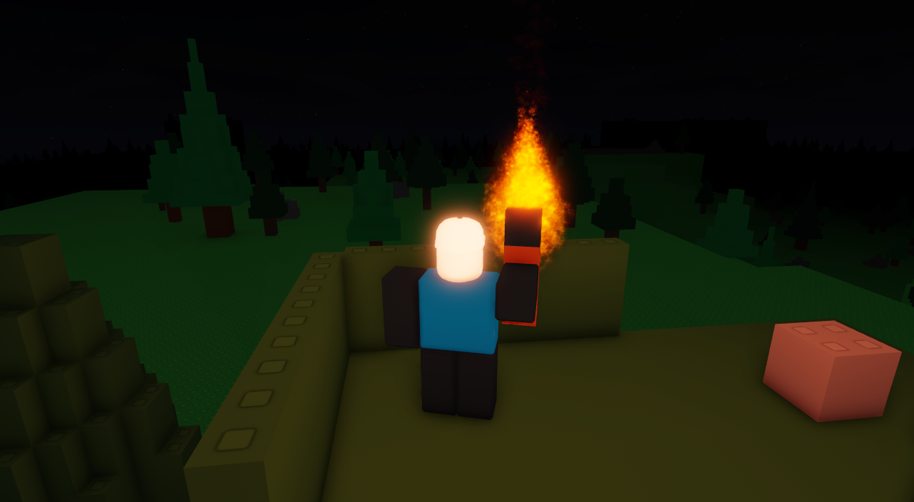
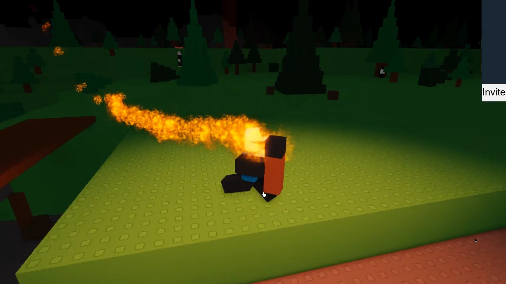
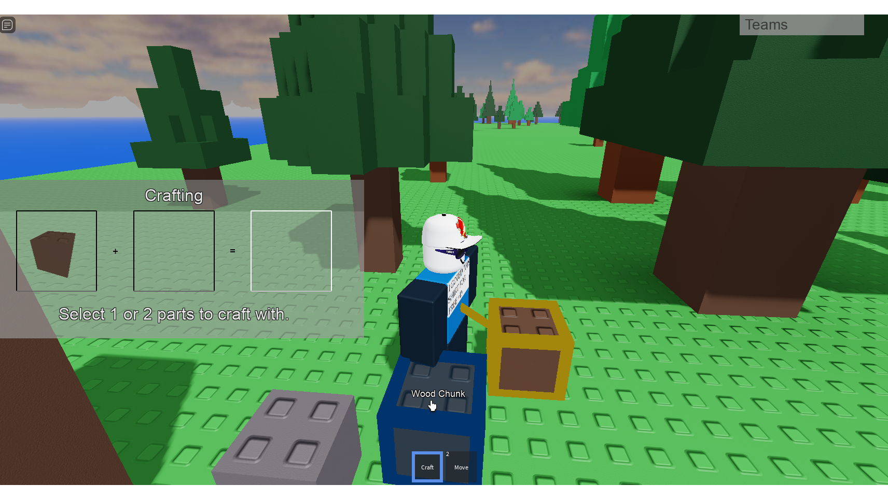

What is this?
Into the Wilderness is a survival game inspired by Survival 303. Like classic brickbattle levels, the world is made up of little blocks. Break them apart and use them to build a base for your team, or craft new parts and weapons. Explore the handmade map, become allies or enemies with others, and work together to survive in the wild.
Pics
  Quick Links
Join the Into the Wilderness Discord server for update news! In the future, the server will open for chatting.